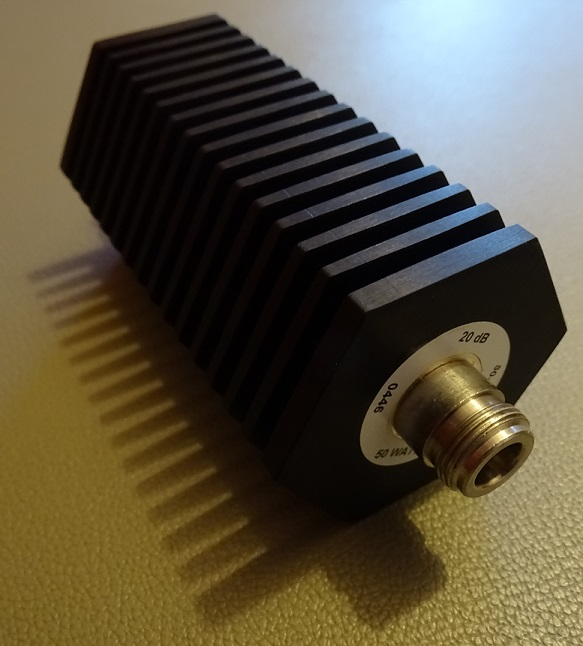
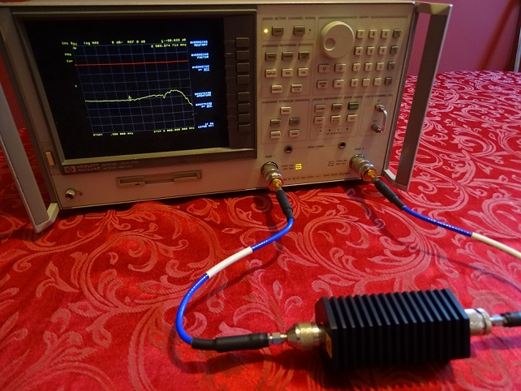
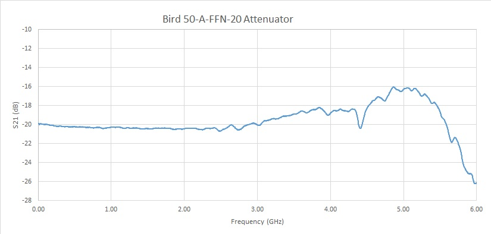

I discovered a seller on Ebay selling a number of attenuators marked 50-A-FFN-20 for 20USD including shipping. These attenuators appeared to be the Bird 50-A-FFN-20, which is sold for some 263USD new! I had been searching for an attenuator, capable of dissipating a not insignificant power at some significant attenuation, in order to protect my instruments from amplifiers during testing. A 50W, 20dB attenuator matched the bill, and I decided to take the risk on such a deal. Too good to be true...?
When the attenuator arrived, I first assessed the condition of the female connectors. Both had some tiny scratches, but appeared to be in excellent (if not, new) condition, as shown in figure 1. Furthermore, the condition of the body of the attenuator was flawless - indicating that this unit had never been used. On one hand, reassuring, but on the other... why had this attenuator not been used? Factory reject?
Figure 1: Close up of the Bird 50-A-FFN-20 attenuator. The overall excellent condition fostered considerable faith it the device's performance, despite the low cost.
Whilst the physical details are important to examine prior to embedding in a test setup (protecting adapters, connectors, etc), the real 'make or break' lies in the electrical performance. Figure 2 shows the experimental setup, using a HP 8753D VNA to measure the S21 of the attenuator on a sweep between 0.3 - 6 GHz. The 'datasheet' for the 50-A-FFN-20 states a VSWR of 1.25 at 3GHz. How would it perform beyond this?
Figure 2: Test setup to characterise the Bird 50-A-FFN-20.
The S21 measurements are presented in figure 3. The device performs with a flat response of no more than 0.6dB variation across some 3.3 GHz. 1dB bandwidth is realised at around 4.5 GHz, 3dB bandwidth at 4.6 GHz. Really very superb performance for a 50W attenuator for 20USD.
Figure 3: Plot of S21 for the cheap Bird 50-A-FFN-20 (pun unintended!
In summary, this attenuator was certainly worth the risk in purchasing. A suitably flat response for my needs, and rated for 50W dissipation for only 20USD is a good deal. As previously mentioned, I intend to use this attenuator when characterising RF amplifiers - acting as protection for my spectrum analyser when connecting non-characterised circuits to it. At the attenuator's rated 50W (47dBm), I should now be able to safely interface with an output of 0.5W (27dBm) - reasonably safely below the analyser's maximum input power of 1W (30dBm).
v1.0: 25/02/22